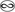

Persistent Identifiers- Long-term identifiers made easy: EZID
- The N2T (Name-to-Thing) Resolver: n2t.net
Low-cost, low-risk resolver discovery (ARKs, DOIs, et al), suffix passthrough, meta-resolving, and namespace splitting.
(2006 PPT slides) - ARK Identifier Overview
published in the Proceedings of the ECDL Web Archiving Workshop, August 2003 - [ARK: One of] A Dozen Primers on Standards
Computers in Libraries, Vol 24, Issue 2, February 2004 -
Towards Electronic Persistence Using ARK Identifiers (PDF)
published in the Proceedings of the ECDL Web Archiving Workshop, August 2003- CDL Case Study (HTML) slides (PPT), July 2005
- ARK Tools (HTML) slides (PPT), July 2005
- What Makes Identifiers Persistent (HTML) slides, February 2004
-
Noid (Nice Opaque Identifier) Minting and Binding Tool (PDF)
overview and technical specification; latest noid software release - The ARK Identifier Scheme (HTML) technical specification
Kernel Metadata and Electronic Resource Citations (ERCs)
- Kernel and ERC Specification (HTML) (Internet-Draft) ; very simple metadata
-
Presentation:
Supporting Persistent Citation (Webcast)
December 2006, University of Edinburgh, School of Informatics, slides (PDF) -
A Metadata Kernel for Electronic Permanence (PDF)
published in the Journal of Digital Information Vol 2, Issue 2, October 2001- A Name-Value Language (PDF); the ANVL text-based syntax substrate
- Temporal Enumerated Ranges (PDF); the TEMPER date/time format
- The HTTP URL Mapping Protocol (PDF); THUMP -- a simpler SRU/OpenSearch
- The Dublin Core Metadata Element Set (August 2007)
John A. Kunze jak@ucop.edu Selected Presentations
University of California, Office of the President
415 20th Street, #406
Oakland, CA 94612-3550
USA
Voice: +1 510-987-9231 Skype: jakkbl